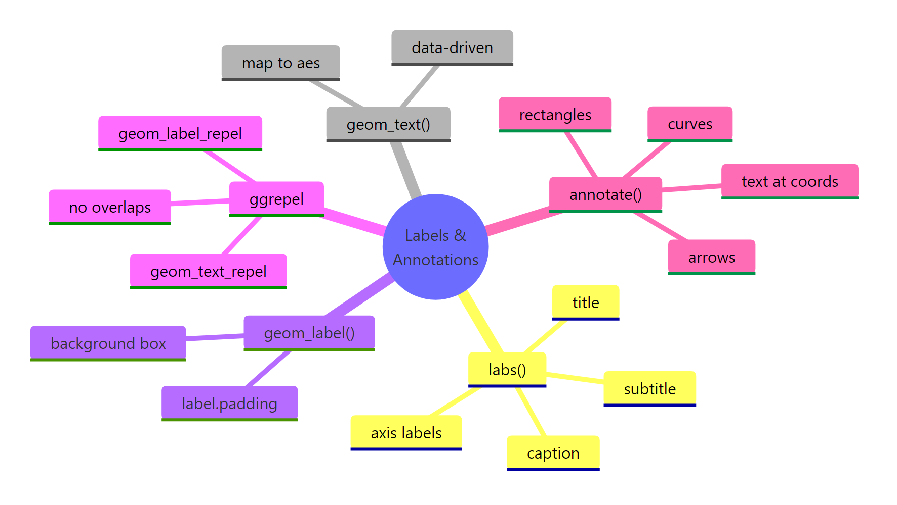
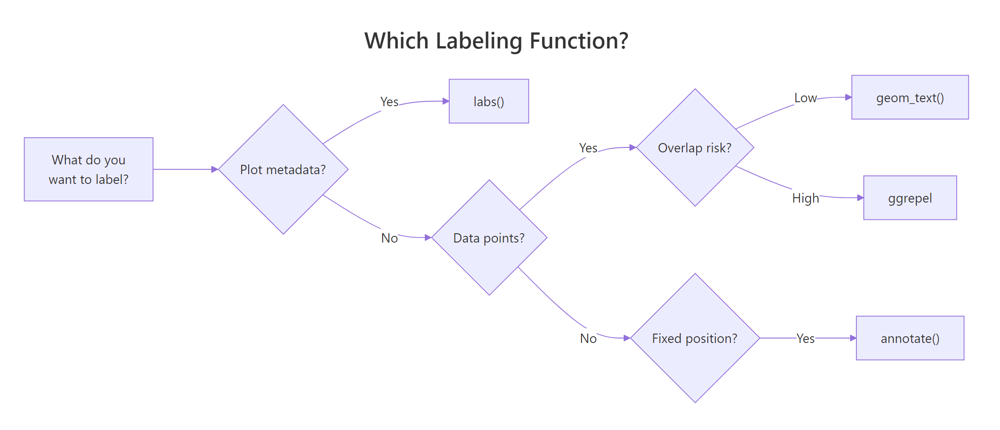
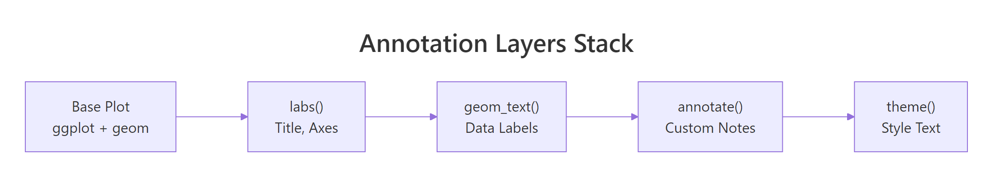

ggplot2 Labels and Annotations: Add Context Without Cluttering Your Chart
Labels and annotations turn a raw ggplot2 chart into a self-explanatory story, use labs() for titles, geom_text() for data-driven labels, ggrepel for overlap-free placement, and annotate() for custom callouts.
Introduction
A chart without labels is like a map without street names. The axes, points, and bars may be technically accurate, but your reader has no idea what they are looking at. Good labels answer the three questions every viewer asks: "What am I seeing?", "What stands out?", and "Why does it matter?"
ggplot2 gives you five labeling tools that cover every scenario. labs() handles the big-picture metadata, titles, subtitles, axis names, and captions. geom_text() and geom_label() attach labels directly to data points. The ggrepel package pushes those labels apart so they never overlap. And annotate() lets you drop custom text, rectangles, or arrows at any coordinate.
In this tutorial, you will learn how each function works, when to pick one over another, and how to combine them into a polished, self-explanatory chart. All code runs directly in your browser, just hit the Run button or press Ctrl+Enter.

Figure 1: Overview of ggplot2 labeling and annotation functions.
Let's start by loading the libraries we need and creating a base plot to work with throughout this tutorial.
How does labs() control titles, axes, and captions?
The labs() function is the single entry point for all plot metadata text. It sets the title, subtitle, caption, axis labels, and even a tag (useful for multi-panel figures). Think of it as the "headline layer" of your chart.
Every argument in labs() maps to a specific text element on the plot. The title sits at the top, the subtitle just below it, the caption in the bottom-right corner, and the tag in the top-left.
The title tells the reader what the chart shows. The subtitle adds the takeaway. The caption credits the data source, a small touch that builds trust. The tag is handy when you have "Figure A", "Figure B" panels in a report.
labs(caption = "Source: ...") for this.You can also style these text elements with theme(). Here is how to make the title bold, center it, and shrink the caption.
The hjust = 0.5 argument centers the text. A value of 0 aligns left, and 1 aligns right. The face argument accepts "bold", "italic", "bold.italic", or "plain".
Try it: Create a scatter plot of mtcars with hp on the x-axis and mpg on the y-axis. Add a title, subtitle, and caption using labs().
Click to reveal solution
Explanation: labs() accepts title, subtitle, and caption as named arguments. Each one appears at the standard position on the chart.
How do geom_text() and geom_label() place data-driven labels?
When you want to attach a label to each data point, the car name next to its dot, the revenue figure above a bar, you need geom_text() or geom_label(). Both map the label aesthetic to a column in your data. The difference is that geom_label() draws a filled rectangle behind the text.

Figure 2: Decision guide: which labeling function fits your need.
Let's label each point with the car's row name using geom_text().
The result is messy because labels overlap heavily. That is expected, we will fix it with ggrepel in the next section. For now, notice that geom_text() takes several positioning arguments.
Now let's compare with geom_label(), which adds a background rectangle.
The nudge_y = 0.8 pushes each label slightly above its point. The fill argument colors the box, and label.size controls the border thickness. Use geom_label() when you need high contrast against a busy background.
size = 12 in geom_text does not match size = 12 in theme(). Roughly, multiply mm by 2.85 to get points. Use size = 3 to size = 4 for most label tasks.Key positioning arguments for both functions:
| Argument | What it does | Example values |
|---|---|---|
nudge_x, nudge_y |
Shift label away from point | 0.1, -0.5 |
hjust, vjust |
Horizontal/vertical justification | 0 (left), 0.5 (center), 1 (right) |
check_overlap |
Hide labels that would overlap | TRUE / FALSE |
angle |
Rotate text in degrees | 45, 90 |
Try it: Filter mtcars to cars with mpg > 30 and label those points using geom_text(). Use nudge_y = 1 so labels sit above the dots.
Click to reveal solution
Explanation: nudge_y = 1 shifts each label one unit above its data point so they do not sit directly on the dot.
How does ggrepel prevent overlapping labels?
The ggrepel package solves the biggest pain point in plot labeling: overlapping text. Its geom_text_repel() and geom_label_repel() functions work like their base counterparts but use a physics simulation to push labels apart. Each label connects back to its data point with a thin segment.
Let's see the difference. Here is the same all-cars scatter, but with geom_text_repel() instead of geom_text().
Much cleaner. The max.overlaps argument controls how many overlapping labels the function will try to resolve before giving up and hiding the rest. Increase it to show more labels on dense plots.
set.seed() before geom_text_repel() and the labels will land in the same positions every time you render the plot. This matters for reproducible reports.Now let's style geom_label_repel() for a polished look.
The box.padding argument adds space between the label box and its point. The segment.color controls the connecting line color. These small tweaks make labels look intentional rather than cluttered.
Useful ggrepel parameters at a glance:
| Parameter | Purpose | Good default |
|---|---|---|
max.overlaps |
Max overlaps before hiding | 10-20 |
box.padding |
Space around label box | 0.35-0.5 |
point.padding |
Space between label and point | 0.3 |
segment.color |
Connector line color | "grey50" |
segment.size |
Connector line width | 0.3-0.5 |
min.segment.length |
Hide short segments | 0.2 |
direction |
Repel direction | "both", "x", "y" |
force |
Repulsion strength | 1 (default) |
Try it: Take the 5 heaviest cars in mtcars (highest wt) and label them with geom_text_repel(). Set the seed to 123.
Click to reveal solution
Explanation: geom_text_repel() automatically spaces labels so they do not overlap, connecting each to its point with a segment line.
How does annotate() add custom text, shapes, and arrows?
Sometimes you need to highlight something that is not tied to a specific data point. Maybe you want to label a region of the chart, draw a rectangle around outliers, or add an arrow pointing to an interesting observation. That is what annotate() is for.
Unlike geom_text(), which maps data columns to aesthetics, annotate() places a single geom at fixed coordinates you specify. It does not need a label column in your data.
Let's add a text annotation to our base scatter.
The \n inside the label string creates a line break. The fontface argument accepts "plain", "bold", "italic", or "bold.italic". Notice that annotate() does not require an aes() call, you pass x, y, and label directly.
Now let's combine a highlighted rectangle with an arrow and a label.
The gold rectangle highlights the "efficient zone", cars that are light and get good mileage. The arrow draws the eye from the label to the region. Together, they tell a story without adding clutter.
Here is a quick reference for common annotate() geom types:
| Geom type | Required args | Use case |
|---|---|---|
"text" |
x, y, label | Fixed-position note |
"label" |
x, y, label | Boxed fixed-position note |
"rect" |
xmin, xmax, ymin, ymax | Highlight a region |
"segment" |
x, y, xend, yend | Straight line or arrow |
"curve" |
x, y, xend, yend | Curved connector |
"pointrange" |
x, y, ymin, ymax | Error bar at a fixed position |
Try it: Add an annotate("segment") arrow to the base scatter pointing from coordinates (4, 30) to the data point for "Toyota Corolla" (wt = 1.835, mpg = 33.9). Add a text annotation at (4.2, 30) that says "Best mpg".
Click to reveal solution
Explanation: The segment starts at (4, 30) and ends near Toyota Corolla. The arrow() function adds an arrowhead at the end point. The text sits just to the right of the segment start.
How do you style and position label text with theme()?
Every text element on a ggplot2 chart, the title, axis labels, tick marks, legend text, can be customized through theme() and element_text(). This is where you make your labels look professional instead of default.

Figure 3: How annotation layers stack onto a base plot.
The key parameters inside element_text() are size, face, color, family, hjust, vjust, angle, and lineheight. Let's see them in action.
The margin() function on axis.title.y adds 10 points of right-side padding, pushing the y-axis title away from the tick labels. This small adjustment prevents the title from cramming into the numbers.
element_text() and geom_text().Here is a reference table for the most useful theme() text components:
| Component | What it controls |
|---|---|
plot.title |
Main title |
plot.subtitle |
Subtitle below title |
plot.caption |
Caption (bottom-right by default) |
plot.tag |
Panel tag (top-left by default) |
axis.title |
Both axis titles |
axis.title.x |
X-axis title only |
axis.title.y |
Y-axis title only |
axis.text |
Both axes tick labels |
legend.title |
Legend title |
legend.text |
Legend item labels |
strip.text |
Facet strip labels |
Try it: Take the p_base scatter and add labs() with a title and axis labels. Then center the title with theme() and make the axis titles bold.
Click to reveal solution
Explanation: hjust = 0.5 centers the title, and face = "bold" makes both axis titles bold in a single call via axis.title.
Common Mistakes and How to Fix Them
Mistake 1: Using geom_text() size as if it were points
Why it is wrong: geom_text() measures size in millimeters, not points. A size = 14 creates enormous text that swallows the chart. The theme() function uses points.
Mistake 2: Using geom_text() on dense data instead of ggrepel
Why it is wrong: With 32 points close together, geom_text() draws every label at its exact data coordinate. The result is an unreadable mess of overlapping text.
Mistake 3: Putting fixed text inside aes() instead of using annotate()
Why it is wrong: When a fixed string goes inside aes(), ggplot2 maps it to every row of the data. You get 32 overlapping copies of the same text, which renders slowly and looks like one bold label (but is not).
Mistake 4: Hardcoding annotate() coordinates that break with new data
Why it is wrong: If the data range changes (new data, different filter), hardcoded coordinates can land outside the plot area or in the wrong spot.
Practice Exercises
Exercise 1: Labeled scatter with ggrepel and labs
Build a scatter plot of mtcars with wt on the x-axis and mpg on the y-axis. Add a title, subtitle, and caption using labs(). Then label only the 6-cylinder cars using geom_text_repel(). Color the 6-cylinder points differently.
Click to reveal solution
Explanation: Passing my_cyl6 as the data argument to both geom_point() and geom_text_repel() layers them on top of the full dataset scatter. The ggrepel labels only appear for the subset.
Exercise 2: Bar chart with value labels and annotated highlight
Create a bar chart showing mean mpg by cyl group. Add the numeric value on top of each bar using geom_text(). Then use annotate("rect") to highlight the tallest bar with a gold rectangle, and add a curved arrow with annotate("curve") pointing to it with a text note saying "Most efficient".
Click to reveal solution
Explanation: geom_col() creates bars from pre-computed values. geom_text() with vjust = -0.5 places value labels just above each bar. The annotate("curve") with negative curvature draws an arc from the label to the 4-cylinder bar.
Putting It All Together
Here is a complete example that combines every labeling technique from this tutorial into one polished chart.
This chart uses labs() for the title, subtitle, caption, and legend label. It uses geom_label_repel() to name the top 3 cars without overlap. It uses annotate() for the highlighted region, curved arrow, and descriptive note. And it uses theme() to center the title, style the subtitle, and move the legend to the bottom.
Summary
| Function | Purpose | Data-driven? | Key arguments |
|---|---|---|---|
labs() |
Titles, axes, caption, tag | No | title, subtitle, caption, x, y, tag |
geom_text() |
Text at data coordinates | Yes | label, size, nudge_x, nudge_y, hjust, vjust |
geom_label() |
Boxed text at data coords | Yes | label, fill, label.size, label.padding |
geom_text_repel() |
Non-overlapping text | Yes | max.overlaps, box.padding, segment.color |
geom_label_repel() |
Non-overlapping boxed text | Yes | Same as above + fill, label.size |
annotate() |
Fixed-position marks | No | geom type, x, y, label, fill, arrow |
theme() + element_text() |
Style all text | No | size, face, color, hjust, family |
The golden rule: use labs() for plot-level metadata, geom_text()/geom_label() when labels come from data columns, ggrepel when those labels might overlap, and annotate() for one-off callouts at fixed positions.
FAQ
What is the difference between geom_text() and geom_label()?
geom_text() draws plain text at each data point. geom_label() does the same but adds a filled rectangle behind the text, making it easier to read against busy backgrounds. Use geom_label() when your chart has many overlapping elements.
Can I use markdown or HTML in ggplot2 labels?
Not with the base functions. However, the ggtext package provides element_markdown() for titles and geom_richtext() for data labels. These let you use bold, italic, colors, and even images inside label text.
How do I label only specific points, not all of them?
Pass a filtered subset as the data argument to geom_text() or geom_text_repel(). For example: geom_text_repel(data = mtcars[mtcars$cyl == 6, ], aes(label = rownames(...))). This adds labels only for the subset while keeping all points visible.
Why do my ggrepel labels still overlap?
Increase max.overlaps (default is 10) to allow more labels. Increase force to push labels harder. Reduce label size. Or filter your data to label fewer points. With hundreds of points, labeling all of them is impractical, pick the top N most interesting.
References
- Wickham, H., ggplot2: Elegant Graphics for Data Analysis, 3rd Edition. Chapter 8: Annotations. Link
- ggplot2 documentation,
labs()reference. Link - ggplot2 documentation,
geom_text()andgeom_label()reference. Link - Slowikowski, K., ggrepel: Automatically Position Non-Overlapping Text Labels. CRAN. Link
- R-Charts, Text annotations in ggplot2 with geom_text, geom_label, ggrepel. Link
- R Graph Gallery, Add text labels with ggplot2. Link
- Wickham, H. & Grolemund, G., R for Data Science, 2nd Edition. Visualization chapters. Link
Continue Learning
Now that your charts communicate clearly with labels and annotations, here are natural next steps on r-statistics.co:
- ggplot2 Themes, Customize fonts, backgrounds, and spacing across the entire chart to match your brand or publication style.
- ggplot2 Facets, Split one plot into a grid of subplots by category, so labels and annotations scale across groups.
- ggplot2 Scales and Axes, Control how axes, colors, and legends translate data values into visual properties.